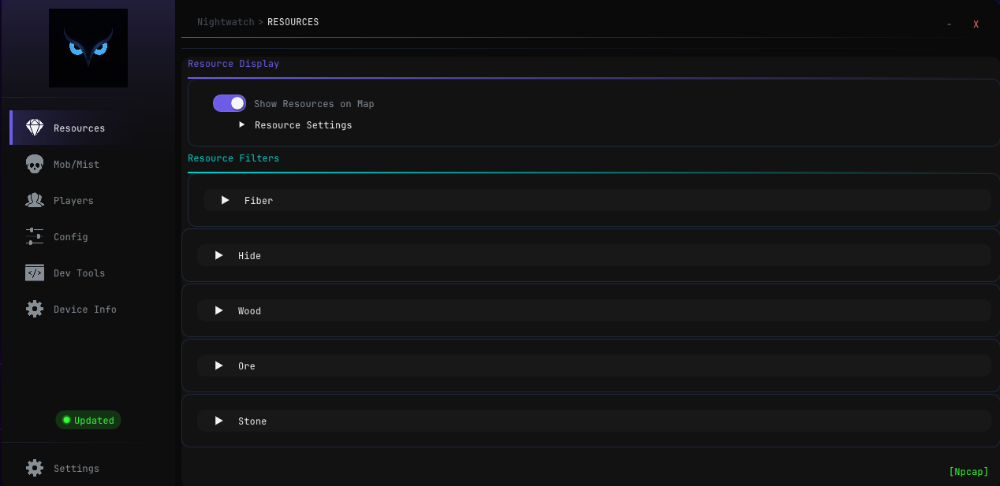

Albion Online — Network Radar
NIGHTWATCH
Oyunun belleğine dokunmadan, sadece ağ paketlerini okuyarak çalışan gelişmiş bir radar ve overlay.
Harici Çalışır
Sıfır FPS Etkisi
Gerçek Zamanlı
4 Dil
VPN Desteği
4Dil
702Oyun Olayı
784Operasyon Kodu
992Harita
v1.5.5Güncel Sürüm
Özellikler
Tam Savaş Görüşü
Nightwatch, rakiplerinizi görmenizi sağlayan kapsamlı araçlar sunar.
Arayüz
Sekmeler & Ekranlar

Tier ve enchant bazlı filtreleme, orijinal ikonlar, doluluk çubukları.
Başlangıç
Kurulum Adımları
-
01
Npcap Sürücüsünü İndirin
Zorunlu -
02
Yönetici Olarak Çalıştırın
Zorunlu -
03
Ağ Kartını Seçin & Yeniden Başlatın
VPN Kullanıcıları
Not
FAQ
Sıkça Sorulan Sorular
Güncelleme Notları
Yenilikler
v1.5.0 - v1.5.5
~/nightwatch $ cat CHANGELOG.md
nightwatch.exe
v1.5.5
UTF-8 | LF
Ücretsiz
İndir & Başla
Sürüm 1.5.5 — Windows x64
Uygulama açılışta yeni sürümü otomatik kontrol eder.
- Gereksinim:
- Windows 10/11 x64
- .NET 8
Uyarı